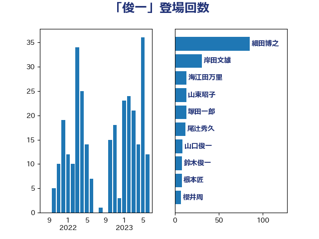

単語「俊一」

| 細田博之 | 自由民主党 | 85 回 |
| 岸田文雄 | 自由民主党 | 31 回 |
| 海江田万里 | 立憲民主党 | 13 回 |
| 山東昭子 | 自由民主党 | 13 回 |
| 塚田一郎 | 自由民主党 | 13 回 |
| 尾辻秀久 | 無所属 | 12 回 |
| 山口俊一 | 自由民主党 | 9 回 |
| 鈴木俊一 | 自由民主党 | 8 回 |
| 根本匠 | 自由民主党 | 8 回 |
| 櫻井周 | 立憲民主党 | 7 回 |
| 山本順三 | 自由民主党 | 6 回 |
| 末松信介 | 自由民主党 | 4 回 |
| 青木愛 | 立憲民主党 | 3 回 |
| 水岡俊一 | 立憲民主党 | 3 回 |
| 青木一彦 | 自由民主党 | 2 回 |
| 鈴木宗男 | 日本維新の会 | 2 回 |
| 金子恭之 | 自由民主党 | 2 回 |
| 谷公一 | 自由民主党 | 2 回 |
| 福岡資麿 | 自由民主党 | 2 回 |
| 田村貴昭 | 日本共産党 | 2 回 |
| 斎藤嘉隆 | 立憲民主党 | 2 回 |
| 徳永エリ | 立憲民主党 | 2 回 |
| 後藤茂之 | 自由民主党 | 2 回 |
| 宮本岳志 | 日本共産党 | 2 回 |
| 加藤勝信 | 自由民主党 | 2 回 |
| 佐藤信秋 | 自由民主党 | 2 回 |
| 佐々木紀 | 自由民主党 | 2 回 |
| 中西健治 | 自由民主党 | 2 回 |
| 阿部知子 | 立憲民主党 | 1 回 |
| 重徳和彦 | 立憲民主党 | 1 回 |
| 道下大樹 | 立憲民主党 | 1 回 |
| 西村康稔 | 自由民主党 | 1 回 |
| 藤岡隆雄 | 立憲民主党 | 1 回 |
| 荒井優 | 立憲民主党 | 1 回 |
| 若松謙維 | 公明党 | 1 回 |
| 笹川博義 | 自由民主党 | 1 回 |
| 笠井亮 | 日本共産党 | 1 回 |
| 盛山正仁 | 自由民主党 | 1 回 |
| 滝沢求 | 自由民主党 | 1 回 |
| 浜田靖一 | 自由民主党 | 1 回 |
| 浅田均 | 日本維新の会 | 1 回 |
| 河野太郎 | 自由民主党 | 1 回 |
| 柴愼一 | 立憲民主党 | 1 回 |
| 松野博一 | 自由民主党 | 1 回 |
| 松村祥史 | 自由民主党 | 1 回 |
| 松原仁 | 立憲民主党 | 1 回 |
| 斉藤鉄夫 | 公明党 | 1 回 |
| 岩渕友 | 日本共産党 | 1 回 |
| 山田賢司 | 自由民主党 | 1 回 |
| 山口壯 | 自由民主党 | 1 回 |
| 宮内秀樹 | 自由民主党 | 1 回 |
| 室井邦彦 | 日本維新の会 | 1 回 |
| 太田房江 | 自由民主党 | 1 回 |
| 大塚耕平 | 国民民主党 | 1 回 |
| 古賀友一郎 | 自由民主党 | 1 回 |
| 前原誠司 | 国民民主党 | 1 回 |
| 住吉寛紀 | 日本維新の会 | 1 回 |
| 井林辰憲 | 自由民主党 | 1 回 |
| 丹羽秀樹 | 自由民主党 | 1 回 |